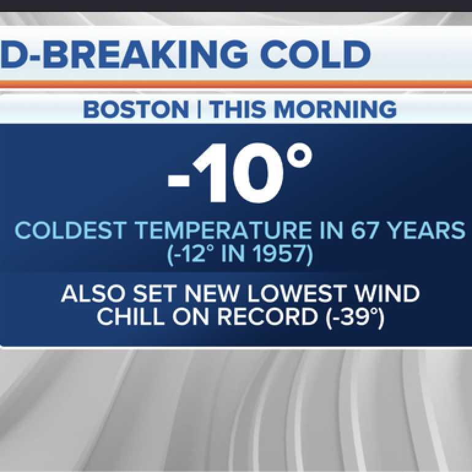

-
Sports · Trending
Kyrie
175K Tuits -
Duis Elementum
· Yesterday
Suspendisse pretium lectus et tempus rutrum.
-
Morbi lobortis · Live
Orci varius natoque penatibus et magnis dis parturient montes, nascetur ridiculus mus. -
Trending in United States
#GRAMMYs
89K Tuits -
 The New York Times
· Yesterday
The New York Times
· Yesterday
Lebron James Keeps the World Watching
-

East Coast Weather · Live
Majority of East Coast under extreme cold warning for serious deep freeze